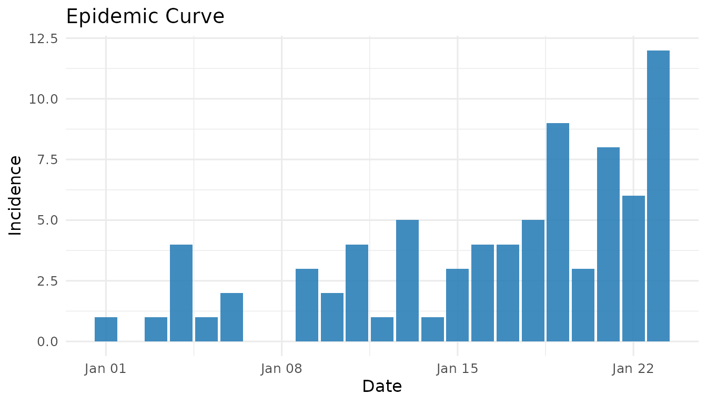
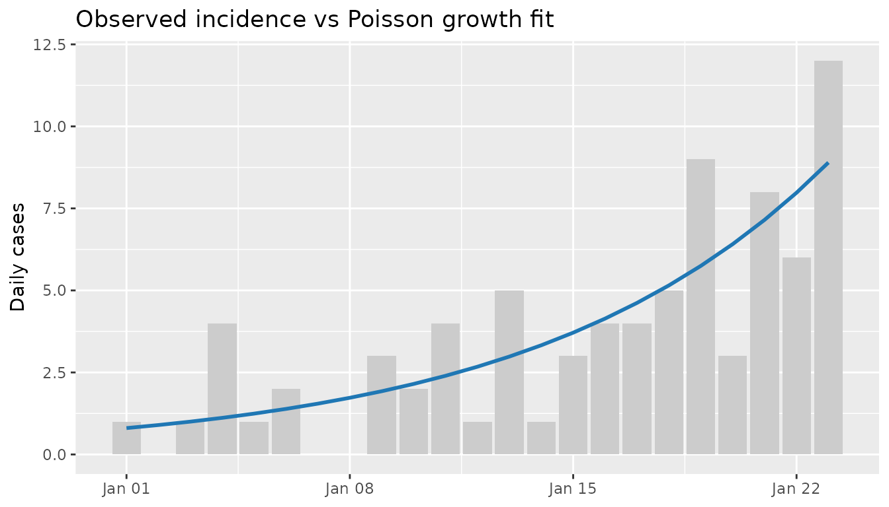

Cat BA Week 1 Analysis
cat-ba-week1-analysis.Rmd
library(omia)
library(dplyr)
#>
#> Attaching package: 'dplyr'
#> The following objects are masked from 'package:stats':
#>
#> filter, lag
#> The following objects are masked from 'package:base':
#>
#> intersect, setdiff, setequal, union
library(ggplot2)Objective
This vignette demonstrates a practical outbreak workflow using the
included cat_ba_week1 dataset. The goal is to combine
complementary evidence sources:
- incidence preprocessing and visualization,
- growth-rate inference from a Poisson model,
- renewal-equation expected incidence,
- simulation for uncertainty intuition,
- optional Rt estimation (when
EpiEstimis available), and - model comparison + consensus summary.
Data and preprocessing
data(cat_ba_week1)
inc <- prep_incidence_data(cat_ba_week1)
inc
#> # A tibble: 23 × 2
#> date incidence
#> <date> <dbl>
#> 1 2024-01-01 1
#> 2 2024-01-02 0
#> 3 2024-01-03 1
#> 4 2024-01-04 4
#> 5 2024-01-05 1
#> 6 2024-01-06 2
#> 7 2024-01-07 0
#> 8 2024-01-08 0
#> 9 2024-01-09 3
#> 10 2024-01-10 2
#> # ℹ 13 more rowsprep_incidence_data() standardizes date/count columns,
aggregates duplicate dates, and fills missing dates. This creates a
consistent daily time series for downstream tools.
Epidemic curve
plot_epicurve(inc)
Visual inspection suggests an upward trajectory with increasing variance, which is consistent with count-process dynamics and motivates Poisson-family models.
Growth model (Poisson log-linear)
We fit a Poisson model with a log link:
where \beta_1 is the daily growth rate. The implied
doubling time is log(2) / beta1.
growth <- fit_poisson_growth(inc)
growth$estimates
#> # A tibble: 1 × 6
#> term growth_rate std_error conf_low conf_high doubling_time
#> <chr> <dbl> <dbl> <dbl> <dbl> <dbl>
#> 1 day 0.109 0.0196 0.0709 0.148 6.34
growth$fitted |>
ggplot(aes(date, incidence)) +
geom_col(fill = "grey80") +
geom_line(aes(y = fitted), color = "#1f77b4", linewidth = 1) +
labs(
title = "Observed incidence vs Poisson growth fit",
x = NULL,
y = "Daily cases"
)
Renewal-equation expected incidence
Given a serial interval distribution w_s and Rt,
expected incidence is computed as:
For illustration, use a fixed Rt = 1.2 and a short
serial interval vector.
si <- c(0.1, 0.2, 0.3, 0.25, 0.15)
renewal_tbl <- renewal_expected_incidence(
incidence = inc$incidence,
rt = 1.2,
serial_interval = si
)
head(renewal_tbl)
#> # A tibble: 6 × 4
#> day infectiousness rt expected_incidence
#> <int> <dbl> <dbl> <dbl>
#> 1 1 0 1.2 0
#> 2 2 0.1 1.2 0.12
#> 3 3 0.2 1.2 0.24
#> 4 4 0.4 1.2 0.48
#> 5 5 0.85 1.2 1.02
#> 6 6 1.35 1.2 1.62Poisson-process simulation
Simulation helps communicate plausible day-to-day variation around expected counts.
sims <- simulate_poisson_process(
expected_incidence = renewal_tbl$expected_incidence,
n_sims = 100,
seed = 42
)
sim_summary <- sims |>
group_by(day) |>
summarise(
mean_sim = mean(incidence),
q05 = quantile(incidence, 0.05),
q95 = quantile(incidence, 0.95),
.groups = "drop"
)
head(sim_summary)
#> # A tibble: 6 × 4
#> day mean_sim q05 q95
#> <int> <dbl> <dbl> <dbl>
#> 1 1 0 0 0
#> 2 2 0.14 0 1
#> 3 3 0.26 0 1
#> 4 4 0.47 0 2
#> 5 5 0.99 0 3
#> 6 6 1.42 0 4Model comparison
A simple practical comparison is between:
-
growth model:
incidence ~ day(Poisson) -
null model:
incidence ~ 1(Poisson)
model_df <- inc |> mutate(day = as.integer(date - min(date)) + 1)
m_growth <- stats::glm(incidence ~ day, family = poisson(), data = model_df)
m_null <- stats::glm(incidence ~ 1, family = poisson(), data = model_df)
compare_incidence_models(list(growth = m_growth, null = m_null))
#> # A tibble: 2 × 5
#> model aic bic looic looic_note
#> <chr> <dbl> <dbl> <dbl> <chr>
#> 1 growth 89.2 91.5 NA not requested
#> 2 null 123. 124. NA not requestedIn this dataset, the growth model should typically outperform the null model on AIC/BIC, supporting a non-stationary incidence process.
Consensus summary
summary_tbl <- outbreak_consensus_summary(
incidence_data = inc,
rt_estimates = tibble::tibble(),
growth_fit = growth,
model_comparison = compare_incidence_models(list(growth = m_growth, null = m_null))
)
summary_tbl
#> # A tibble: 1 × 11
#> start_date end_date days_observed total_incidence peak_date peak_incidence
#> <date> <date> <int> <dbl> <date> <dbl>
#> 1 2024-01-01 2024-01-23 23 79 2024-01-23 12
#> # ℹ 5 more variables: latest_rt <dbl>, growth_rate <dbl>, doubling_time <dbl>,
#> # trend <chr>, best_model <chr>This summary is designed as a compact handoff table for reports/dashboards.
Optional Rt estimation with EpiEstim
If EpiEstim is installed, integrate time-varying Rt
directly:
rt <- estimate_rt_epiestim(inc)
plot_rt_estimates(rt)Rationale and limitations
Why combine methods?
- Growth models estimate trend intensity and doubling/halving dynamics.
- Renewal calculations encode transmission structure via serial intervals.
- Rt estimation (optional) provides transmissibility over time.
- Model comparison quantifies relative explanatory fit.
No single estimator is sufficient in isolation; agreement across views improves interpretability.
Key limitations
- The included dataset is short and intended for demonstration.
- Poisson assumptions may understate overdispersion for real outbreaks.
- Renewal output depends on serial interval specification.
- Rt estimates are method/config-sensitive and should be sensitivity-tested.
For production surveillance, pair this workflow with data quality checks, multiple model families (e.g., NB/hierarchical variants), and explicit sensitivity analyses.